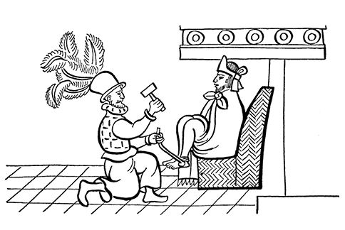
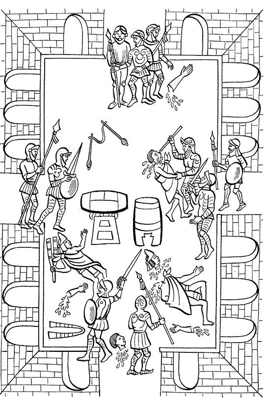
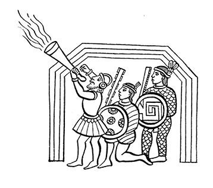

阿兹特克帝国驻华使馆
目录 |
第九章 托斯卡特尔节1时在大神庙的大屠杀
导 言
西班牙人在墨西哥-特诺奇蒂特兰刚安顿下来，蒙泰古祖玛就成了科尔特斯的俘虏。一些印第安人的记述，如《拉米雷斯抄本》、伊斯特利尔索奇特尔的《第十三篇记述》、《阿乌宾抄本》等都直接记述了在托斯卡特尔节日时堂佩德罗·德·阿尔瓦拉多所制造的屠杀。托斯卡特尔节是纳瓦人为纪念维奇洛波奇特利神而设立的节日。 当时埃尔南·科尔特斯已经离开特诺奇蒂特兰去与潘菲洛·德·纳瓦埃斯火拼，后者奉古巴总督迭戈·委拉斯开兹之命前来捉拿科尔特斯。阿尔瓦拉多被墨西卡人称为“太阳神”，此人在节日庆祝活动进行到高潮的时候，制造了残酷的屠杀。这里摘录的两篇证词用现实主义手法绘制成图画，详细记述了阿尔瓦拉多背信弃义的行径所酿成的惨剧，悲剧性堪与伟大的古代英雄史诗相媲美，图画旁边附有用纳瓦特尔语写成的解释性文字。 首先，我们将听到萨阿贡实情提供者的证词，它叙述了墨西卡人如何准备过节；如何用野苋草编成维奇洛波奇特利神像；后来在节日庆祝过程中西班牙人又如何背信弃义地向墨西卡人发动突然袭击。接着，萨阿贡实情提供者还向我们叙述了墨西卡人的反应，以及印第安人如何包围了西班牙人栖身的蒙泰古祖玛的府邸。当科尔特斯回来的消息传来时，这一幕才宣告结束。墨西卡人“齐心协力地躲藏起来，不被西班牙人看到。他们四处藏身，就好像深沉的黑夜笼罩了一切……” 本章除了萨阿贡实情提供者的记述以外，还引证了《阿乌宾抄本》的印第安作者对纳瓦人在庆祝托斯卡特尔节时在大神庙前遭到同一屠杀的简单图画描述。这不是一幅大型图画，对此卡里巴依博士写道：“从文学角度来讲，任何作品都会容纳这种表达方式。在这里我们看到特诺奇蒂特兰人在那个长相不错但内心狠毒的托纳蒂乌2，即阿尔瓦拉多，所策划的袭击面前的反应，我们自己也感同身受”。
托斯卡特尔节的准备工作
墨西哥人曾告诉过西班牙人他们要过维奇洛波奇特利节，西班牙人也想看看这是什么节日，看看他们如何庆祝这个节日。 不久，蒙泰古祖玛的命令下来了，让部分人来到统帅的府邸，向他禀报他们过节需要什么。 在得到居住在蒙泰古祖玛囚禁之地的西班牙人的允许之后，斋戒满一年的妇女们就开始在大神庙的庭院里将蓟罂粟的种子磨碎。 西班牙人出现了，他们穿戴整齐，很多人还带着武器。这些人在女人中间穿来穿去，一个一个地看，有时好几个人围着一个人，看妇女们的面容，看她们如何劳作。看完就钻进王宫。后来据说，他们那个时候就已经起了杀心。如果那时候有任何当地男子现身的话，他们早就动手了。
制作维奇洛波奇特利神像
托斯卡特尔节到来了。黄昏时分，人们开始制作维奇洛波奇特利的真身形象：此神有人的面孔，人的身体。 真身只用野苋草籽和蓟罂粟籽塑造，把这种草籽贴在框架上，框架由枝条固定，然后再把框架用木钉固定在一个地方。 当形象已经成形，再在上面插上羽毛，在他眼睛的四周粘上印第安人特有的朱红色的长线条，在他的耳朵上挂上镶嵌绿松石的蛇形耳坠，耳坠下挂着脚趾形带纹理的金圈。 神像的鼻子是由多个小箭形金制品塑成，上面镶嵌着宝石，鼻下挂着带纹理的金圈。可以看到，数条蓝、黄两色相间的横线穿过鼻子画在脸上。神像头上戴着由蜂鸟羽毛制成的巫师发束。发束之上是阿奈固尤特尔3，这是一种用细密的羽毛织成的锥形圆帽，顶端成尖状。  神像的颈上挂上用黄鹦鹉羽毛制成的装束，从这种装束上垂下层层流苏，像小伙子们的头束；后氅状似荨麻叶；腰带呈黑色，有五个地方都镶有一簇细密的老鹰羽毛。 神的全身都被衣物裹紧，腰后是后裙摆，上面画着人的骷髅和骨头；上半身披小坎肩，上面画着被肢解的人的各个部位，如人头、耳朵、心脏、肠子、胸膛、乳房、手、脚等。 他的马斯特莱4制作精美，上面也同样画有人体被肢解后的各个部位。他的流苏是用无花果树皮纸制成的，有四分之一个单位5宽，二十个单位长。马斯特莱上有淡蓝色竖条花纹。 神像的后背插着一面血色的旗子，用纯纸制成。纸被染成鲜红色，仿佛是鲜血染成的。他还戴着用作祭祀的燧石和纸制的王冠，上面可见红色条纹。 神像手里拿着竹制盾牌，盾牌有四个地方装饰着精美的老鹰细羽毛簇，这种东西叫作特乌埃乌埃利。盾牌上还画有一面血色的小旗，与神像背后的旗子颜色一样。有四支利剑与盾牌连在一起。 维奇洛波奇特利神的手臂上戴着用丛林狼皮制成的臂镯，同手镯一样，下面垂着短条。
节日开始
天一亮节日就开始了。一大清早，那些经过宣誓的人揭开蒙在维奇洛波奇特利头上的面布，然后排队立在神像的前面，燃香敬拜并在神像前摆放各种祭品：斋戒食品（有时还敬上人肉）和野苋种子压成的饼。 此时，他们并没有把神像抬起来送到金字塔上。 所有的男人、年轻的武士都准备就绪，一心一意地过节，举办各种庆典活动，以便让西班牙人能看到自己的所作所为，向他们显示自己，让他们印象深刻。他们还把礼品摆在西班牙人的面前。 接着，众人开始游行，队伍向庙院行进，他们要前去那里跳蛇舞。当所有人都集中在院里的时候，仪式就开始了。大家开始唱歌，一边跳蛇舞一边唱歌。 那些斋戒了20天和斋戒了一年的人走在队伍前面。他们用松木手杖维持队形。谁要离队就用手杖威胁他们。 如果有谁要小解，便脱下胯下的织物和用草鹭羽毛编织的饰物。 但是对那些不听话的人、对那些离队东看西看的人就打他们的屁股，打他们的双腿和双肩，然后揪着耳朵将他们赶出队伍，此时谁也不敢吱声。接着有人将他们推倒在地，使他们脸朝下，动弹不得。 那些斋戒一年的人受到众人的极大敬重，大家都敬畏他们，给他们起独特的名字，叫作“维奇洛波奇特利的兄弟姐妹们”。 重要的头人和最勇敢的武士带领大家走在跳舞队伍的前面，他们的后面，隔着一段距离行进的是刚刚成年的小伙子，这些人中有人脸上有一绺头发——这说明他们还没有俘虏过敌人，还有人戴着阄筒状的头饰——这表明他们在别人的帮助下俘虏过敌人。 一些新手，被叫作“年轻武士”的人——他们已经俘虏过一个或两个敌人，也跟在后面行进。众人对他们叫道： “来呀！朋友们，拿出你们的勇气来，让他们看看你们有多勇敢！”
西班牙人向墨西哥人发动进攻 众人又跳又唱，沉浸在节日的欢乐中。他们唱完一首又一首，就像欢乐的浪花。就在这个时刻，西班牙人做出了动手杀人的决定。他们带着武器闯了进来。 首先，他们封锁了各个出入口：位于小庙的老鹰出口、阿卡特尔·依亚卡潘6的出口、特斯卡克阿克（镜子蛇）的出口，并派兵把守这些路口：谁也不能从这里出去。 一切准备就绪，紧接着他们便步行，带着他们的木盾牌或金属盾牌和利剑进入大神庙的圣院杀人。 西班牙人逼近了跳舞的人群，直奔敲小鼓的地方，向正在敲鼓的鼓手砍去，砍掉了他的双臂，接着又砍下了他的头颅，断头飞落在远处。 与此同时，西班牙人向人群大开杀戒，用利剑砍伤很多人。还有些人从后面向印第安人袭击，大砍大杀，很多人倒在地上，肠子流了一地。也有的人头部被砍得伤痕累累，受伤的头颅最终还是被砍掉了。 还有的人从印第安人的肩上劈下，身体瞬时被劈裂。他们浑身都是伤痕。有些印第安人的大腿和腿肚被砍伤，另一些人被开膛破肚，肚肠全都流了出来，竟还有人拖着肠子乱跑，以至肠子把腿绕住。他们渴望逃生，但不知逃向何处。  大神庙屠杀（杜兰抄本） 有些人企图逃跑，在出口处被打伤或被匕首刺伤。另一些人想跳墙逃跑，也没有成功，还有人逃入公共房屋，在那里他们终于逃过一命。也有人钻进死人堆，想装死躲过一劫。那些装得比较像的，保住了一条命。但也有人在死人堆里站了起来，被发现，成了西班牙人的刀下鬼。 武士们的鲜血流成了河，汇聚在一个一个的水洼里，血腥气直冲云霄。流出的肠子洒得到处都是。 西班牙人到处寻找公共房屋，见房就进，用利剑乱砍乱刺，试探是否藏有印第安人。他们到处走，到处找，找遍了所有房舍。
墨西哥人的反抗
有人知道自己已逃出虎口，便大声叫道： “军官们，墨西哥人！……请到这里来。请带着你们的武器、旗标、盾牌和投枪到这里来……请跑步快来！我们的指挥官被杀了，我们的武士被杀了……他们都被杀死了。唉！我们墨西哥的指挥官啊！” 这时，人们听到了嘈杂的呼喊声、怒吼声，他们时而呼喊，时而用手捂住了自己的嘴巴。很快，所有的指挥官带着投枪和盾牌集合起来，就好像他们事先就约好了似的。 战斗就这样开始了：投枪、箭镞、标枪、捕禽枪纷纷投向西班牙人，密集而愤怒的标枪飞向西班牙人。这些遮天蔽日的武器将天空染成黄色，连投枪杆也纷纷落在西班牙人的身上。
西班牙人躲到宫廷里
此时，西班牙人只好躲藏起来。他们也开始还击，铁制的箭簇射向墨西哥人，他们还放射钢炮和火枪。 西班牙人给蒙泰古祖玛戴上了脚镣。 此时，墨西哥的指挥官们从在屠杀中惨遭不幸的死人堆里一个一个地被拉了出来。西班牙人一个一个地对他们进行辨认，看他们是死是活。
为死者哭泣
死者的父母们率先放声大哭，他们为死去的儿女悲痛欲绝。他们把尸体带回自己的家里，然后又把尸体带到大神庙的庭院里：尸体都堆放在这里，都将集中焚烧。这个地方叫瓜乌希卡尔克，即老鹰罐。也有的尸体就在青年之家直接烧掉。
蒙泰古祖玛发出信息
就在太阳神即将隐退、阳光就要消失之际，特拉特洛尔克的国王伊特斯瓜乌特辛上台发表讲话，他大声叫道： “墨西哥，特诺奇蒂特兰人和特拉特洛尔克的臣民们，你们的君主蒙泰古祖玛国王有话要对你们说。他令我告诉你们，墨西哥人，你们好生听着： ‘我们敌不过西班牙人，你们不要再反抗了。让你们的盾牌和利剑歇息吧。 受苦的是老人和卑微的人，不管男女他们都值得怜悯。吃苦的还有那些行为谨慎的人，他们从没站直过腰杆，总是像猫一样，走路不声不响。受苦的还有尚在摇篮中的婴儿，尚睡在木棍支成的小床上的孩子，他们还未通晓人事。 正因如此，我，你们的国王说： 我们敌不过他们，我们不要再反抗了’。”伊特斯瓜乌特辛告诉众人，西班牙人已给蒙泰古祖玛戴上了铁制的脚镣。 伊特斯瓜乌特辛的话音刚落，众人就对他大嚷大叫，表现出对他的蔑视，因为墨西哥人真的气疯了，他们怒吼道： “卑鄙无耻的蒙泰古祖玛，你胡说什么！我们不再是你的臣民！” 此时，求战的声音甚嚣尘上，众人开始把箭射向高台。西班牙人用盾牌保护着蒙泰古祖玛和伊特斯瓜乌特辛，墨西哥人的箭没能射中他们。 让墨西哥人愤怒不已的是，他们的武士在还没有意识到马上就要受到攻击的情况下就遭到了杀戮，他们的指挥官也遭到了同样的命运。墨西哥人不愿逃跑，不愿放弃战斗。
墨西卡人包围了西班牙人
墨西卡人围住了王宫，并对王宫严加监视，不允许任何人偷偷溜进去给送食品。当然，他们自己也绝不提供食物：他们什么都不再提供，目的就是要把里面的人活活饿死。 对那些妄图与里面的人建立联系、秘密递送食品的人，他们就贴出告示，此事一旦被发现，他们的后颈就会被击碎或遭到石击，会让他们当场毙命，毫不留情。 有一次，几个墨西哥人向城里运送兔皮，还放话说他们可以带其他人偷偷进来。为此印第安人贴出布告，命令众人严加防范，在各个路口和河道严加看管。防范措施大大加强了。 那几个运送兔皮的人是被阿尤特辛特佩克和奇南特兰地方的头人派来此地办差的，差事还没办完就死于非命：在河边，守城的人用长叉把他们的后脑壳击碎。特诺奇蒂特兰人就这样自己内斗起来。他们毫无道理地拘留差人，对他们说： “就是这个家伙！”然后就结果了他的性命。偶尔，他们发现有人戴着玻璃唇饰7，便把他们捉住、杀掉，并说： “此人一直想进去给蒙泰古祖玛他们送吃的。” 如果发现有人穿着办差的人所特有的龙舌兰纤维布制的衣服，同样把他们抓起来，并且说： “此人一看就不是好东西，他想见蒙泰古祖玛。” 那些想逃跑而不成功的人，用央求的口吻说道： “你们想干什么呀，墨西哥人，我可不是坏人。” 回答是： “你怎么不是坏人，倒霉鬼！……你不是蒙泰古祖玛的仆人吗？” 说完马上将他杀掉。 墨西哥人就这样严格审查每一个人，查看每个人的面孔，查问他的职务。他们就这样到处严加警戒。很多人因莫须有的罪行而被处决了，为他们未曾犯过的罪行而付出了生命的代价。 但还是有些办差的人藏匿起来，成功躲过一劫。从此恐惧和羞耻控制了墨西哥人：他们不再串门，不想见任何人，更不想落入他人魔掌。 西班牙人被围困在王宫的头七天中，印第安人不断发动进攻。西班牙人被死死地围困了23天。 在这些天里，水道的拥堵物被铲掉，河道被加宽加深，河边放上原木，河水中放上阻挠过河的物件，这样从任何地方都很难渡河。 在陆地上，所有道路都安置了路障和堵墙，道路被截断。所有道路和街道都被封死。8
《阿乌宾抄本》对屠杀的记述
在托斯卡特尔节，一些人把神像送到山上。当歌舞一开始，西班牙人便屠杀歌手。蒙泰古祖玛看到了这一切，对马林辛说道：“劳驾，请您将我的话告诉给天神9听：我们自己神祇的节日开始了。从现在开始要持续十天。请看我们如何将神像送到山上，还要给它燃香。当野苋饼送上时，我们便开始跳舞。虽然会有些吵闹，但是仅此而已。” 西班牙队长说道： “好，好。我都听明白了，你们就这样做吧。” 众人开始行进，他们碰见了许多西班牙人，只有“太阳神”10端坐不动。 当地历法的时辰一到，蒙泰古祖玛就对马林辛说： “劳驾，请听我一言：请你们待在此处。神明的节日庆典马上就要开始了，我们要敬拜我们的上帝了。” 队长说： “让他们就这样做吧。我们会一直待在这里。” 此时，指挥官们说道： “劳驾，请把我们的弟兄们11也叫来吧。” 弟兄们都到来了，并下令说道： “你们努力吧，你们认真干吧，要把事情办得圆满。” 弟兄们听令而应。 武器库的长官特卡特辛说道： “劳驾，请告诉我们面前的君主12，在乔卢拉也出现过同样的情形：西班牙人把乔卢拉人关进了一个房间。现在他们也把我们逼到了绝境。要知道，每堵墙下都藏着我们的盾牌！” 蒙泰古祖玛听后说道： “怎么，难道我们已处于交战状态啦？我们要信任他们。” 武器库的长官只好答道： “遵命！” 很快，歌声响起，众人开始跳舞。一个年轻的印第安指挥官指挥大家。他嘴上戴着唇饰。他是托尔纳瓦克的瓜特拉索尔。歌声刚刚响起，基督徒们便一个一个地出现了；他们混入人群，然后四人一组守住了入口。 有人给领舞者狠狠的一击。另一个西班牙人对着神像的鼻子重重打了一拳。很多西班牙人还扇了众鼓手和两个长鼓手的嘴巴。此时局势大乱。随后，一切都成了废墟。 此时，阿卡特尔·依亚卡潘的一个祭司匆忙赶来，大声叫道： “墨西哥人听着：这还不是战争吗？谁还信任这些外来人？我们被俘人员的盾牌现在在谁的手里？” 印第安人只能用冷杉木的木棍进行还击，可是他们却发现木棍已被利剑砍断。 西班牙人躲进他们原来栖身的房子里。13  1 关于托斯卡特尔节（Tóxcatl），萨阿贡解释说：“这是他们所有节日中最重要的节日，有如我们的复活节，日期也在复活节后几天。”——原注 2 托纳蒂乌（Tonatiuh）是阿兹特克人心目中的太阳神，这里指阿尔瓦拉多。 3 阿奈固尤特尔（anecúyotl），维奇洛波奇特利的独有标记，类似王冠。——原注 4 马斯特莱（maxtle），也叫马斯特拉特尔，是一种遮羞布，雅克·苏斯戴尔在其《阿兹特克人的日常生活》（阿歇特出版社，1955年，巴黎）一书中这样描写这种织物：“这是一块系在腰上的能活动的呢布，吊在两腿之间，腰带在前面打结，呢布在前后两端自然垂落，经常饰有花纹和飘带。有的马斯特莱制作简单，仅是一块没有修饰的布，有的则修饰繁杂。马斯特莱早在奥尔梅克和玛雅时期就有了，到了16世纪，除了西部的塔拉斯克和西北部的瓦斯特克人以外，在墨西哥文明的部落已经普遍使用，中部的墨西哥各部落为此还对前两个部落议论纷纷。”——原注 5 长度单位不详。 6 阿卡特尔·依亚卡潘（Acatl Iyacapan），意为“芦苇塘角”，位于大神庙内。——原注 7 玻璃饰品是西班牙人送给印第安人的小礼物，所以遭到看守的怀疑。 8 萨阿贡实情提供者，《佛罗伦萨抄本》，第12卷，第19、20、21章（卡里巴依译本）。——原注 9 这里的天神当指阿尔瓦拉多。 10 仍指西班牙队长，即阿尔瓦拉多。 11 这里“弟兄们”似指西班牙指挥官。 12 这里“君主”是指蒙泰古祖玛。 13 《阿乌宾抄本》，A.贝尼亚费尔出版社，第84页（见卡里巴依译本）。——原注 |
|---|